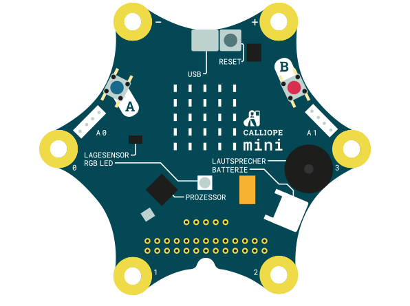
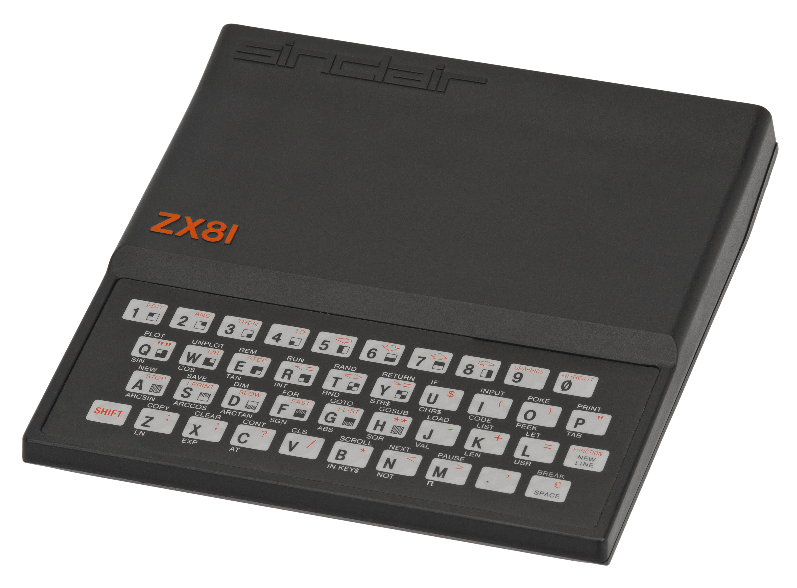
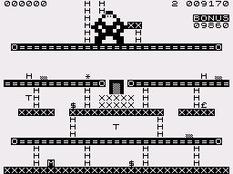
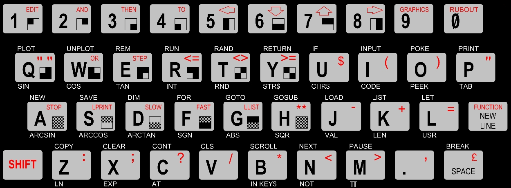

 |  |
theOpenBit tob@schoenesnetz.de
20.10.2017
Im Jahr 1981, also vor 36 Jahren brachte die Firma Sinclair den Homecomputer ZX81 auf den Markt. Das war einer der ersten Homecomputer überhaupt!
Es gab keine Smartphones, kein Internet nur Fernsehen und Radio.
So sah der ZX81 aus: | So sah das Fernsehbild aus: |
 |
Es gibt einen Prozessor (CPU)
Dieser kennt Befehle mit denen man Daten (Zahlen) verändern kann.
Ein Programm ist eine Auflistung der Befehle, die ein Prozessor versteht. Die Auflistung hat den Zweck, die Daten in gewünschter Weise zu verändern. Beispielsweise zwei Zahlen miteinander zu addieren.
Es gibt einen Speicher (RAM). Das ist eine Art Notizblock. Auf diesen kann man das Ergebnis eines Befehls schreiben. Auf dem Notizblock kann aber auch das Programm geschrieben werden, das der Prozessor abarbeiten soll.
Jeder Prozessor (CPU) hat festgelegte Befehle, die er versteht.
So hat auch schon damals der ZX81 gearbeitet, aber:
Es gibt sehr viele unterschiedliche Prozessoren
Jeder Prozessor kennt unterschiedliche Befehle.
Deshalb verstehen heutige Computer nicht mehr die Programme für den ZX81.
Die Leistungsfähigkeit des ZX81 war so gering, dass selbst der kleine Calliope „so tun kann“ als ob er ein Prozessor für den ZX81 sei.
Dafür läuft auf dem Calliope ein Programm, dass die Befehle der Prozessors versteht, der im ZX81 eingebaut war. Man nennt dies „emulieren“. Dadurch ist es möglich, die Programme des ZX81 wieder laufen zu lassen und auch neue Programme wie vor 36 Jahren zu erstellen
Das sieht dann so aus…
Die Programme für den ZX81 werden in den Speicher des Calliope gelegt
Anschließend wird das Programm zum Emulieren des ZX81 Prozessors gestartet
dieses liest den ersten Befehl des ZX81-Programms und übersetzt ihn in einen Befehl des Calliope
Das Ergebnis des Befehls wird durch das "ZX81-Prozessor-Programm" in den Speicher des Calliope geschrieben.
Dabei merkt das ausgeführte ZX81-Programm gar nicht, dass es sich bei dem Speicher um den des Calliope handelt
probier es aus und schreibe ein ZX81-Programm…
 Quelle:commodore64crap.wordpress.com
Die Shift-Taste der ZX81-Tastatur liegt auf der Taste #
Sie bleibt so lange aktiv, bis sie ein zweites Mal gedrückt wird
Ist Shift gedrückt leuchtet der Callipoe rot
mit der Taste @
Das gewählte Program wird durch den Load
LOAD ""# j p p # ENTER
{kind=link}
{kind=link}